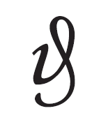
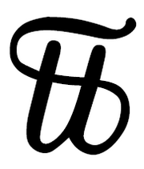

|
|||||||||||||||||||||||||||||
|
|
Alles ist schwierig, bevor es leicht wird
Planetensymbole für die Wochentagsbezeichnung
Die (graphischen) Symbole für die Wochentage sind Symbole der Planeten. Alle Wochentage tragen im Lateinischen (!) die Namen von Planeten, und so sind ihre Symbole die Symbole der Planeten. z.B. ein Halbmond für den "dies lunae", das ist der Tag des Mondes, unser Mon(d)tag (das "d" haben wir irgendwann "verloren").
In der Literatur kommen häufig genealogische Zeichensätze vor. Nachfolgend einige davon nebst ihrer Bedeutung:
Abkürzungen für unbestimmte Einträge bei der Gedcom bzw. in der Software: Zugelassen sind:
Währungszeichen: Pfennig: Für 'Pfennig' wurde früher vorrangig das Kürzel 'd' verwendet, wobei 'd' für 'denarius' (Mehrzahl: 'denarii') steht (vgl. Kürzel 'd' für Penny). Das Pfennigzeichen wurde bis nach dem Zweiten Weltkrieg verwendet. Es war ein in der deutschen Kurrentschrift geschriebenes 'd' mit einem Schwung nach unten, wie nebenstehende Abbildung zeigt.

Pfund als GewichtseinheitDas Pfund taucht zum ersten Mal im karolingischen Reich auf. Es geht auf die altrömische Libra (lat.: Pfund, Waage) zurück, von der auch das Kurzzeichen Lb, lb oder ℔ übernommen wurde. Diese maß 327,168 g zu 12 Unzen von 27,264 g. Die ebenfalls altrömische Mina war mit 16 Unzen 436,224 g schwer. Unter Karl dem Großen wurde das Gewicht neu festgesetzt. Das Karlspfund (pondus Caroli) betrug ca. 406½ Gramm.  Als „Krämergewicht“ war 1 Pfund = 16 Unzen = 32 Lot = 128 Quentchen = 512 Pfenniggewichte = 1024 Hellergewichte (oder 1 : 16 : 2 : 4 : 4 : 2). 1854 legte der Deutsche Zollverein das Pfund (Zollpfund) auf exakt 500 Gramm fest.
Pfarrerbücher von Thüringen etc./territoriale Zugehörigkeit, Zusammenstellung von Thomas Engelhardt
Der Geist
ist demselben Gesetz
unterworfen
|
||||||||||||||||||||||||||||